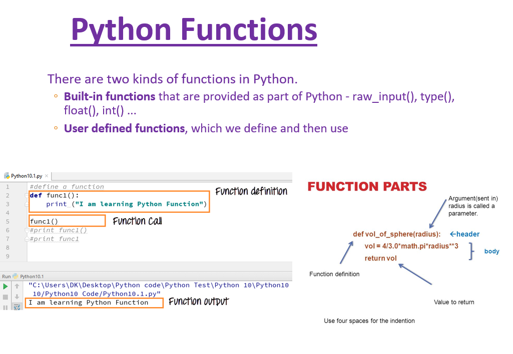
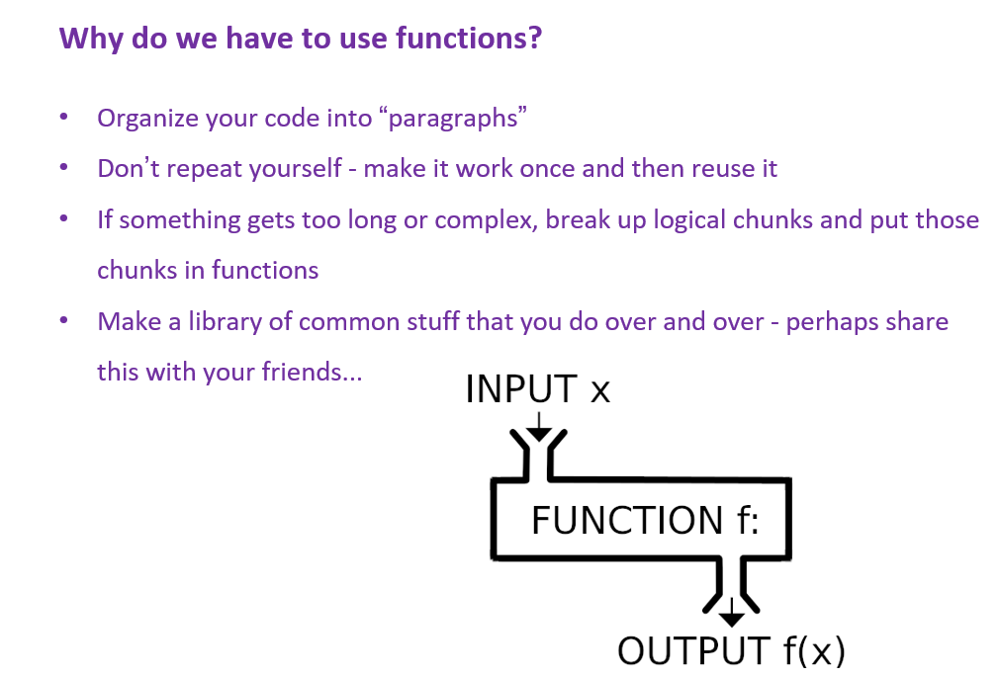
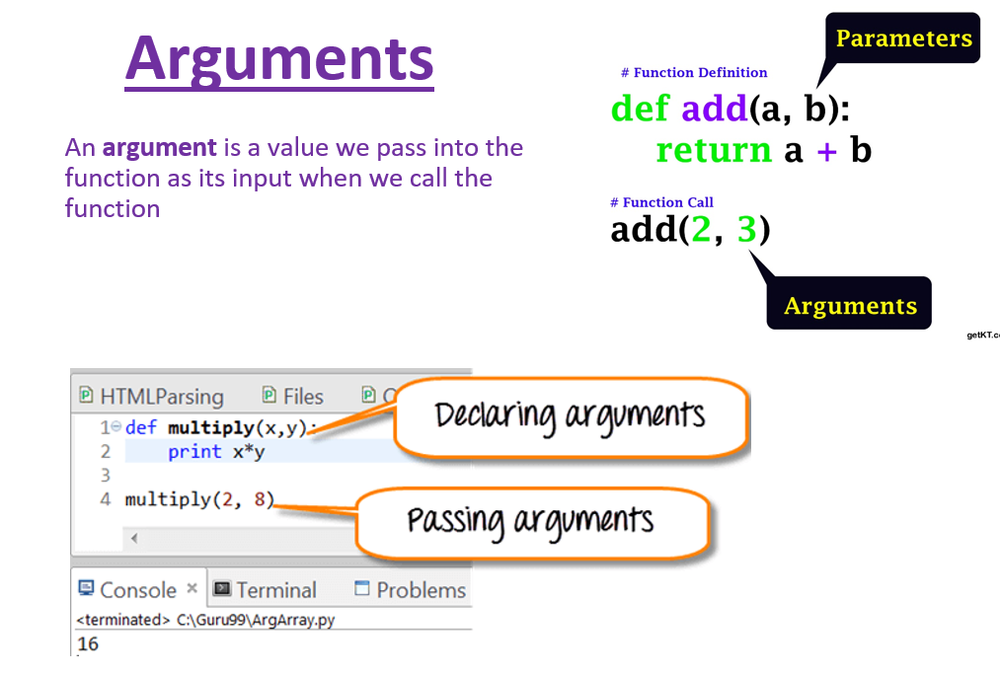

Page 15 of 16 · draft
Functions



Activities
Tasks marked ★ are the more challenging ones.
1Activity 1
HOURS INTO SECONDS: Write a function that converts hours into seconds.
2Activity 2
AREA OF A TRIANGLE: Write a function that takes the base and the height of a triangle and returns its area.
3Activity 3
SQUARE: Write a function calc_square that accepts a number from the user and returns its square.
4Activity 4
NAME AND AGE: Create a function that accepts two arguments, a name and an age, and prints them.
5Activity 5
ADD AND SUBTRACT: Write a function calculation() that accepts two numbers and works out both their sum and their difference. It must return both results in a single return call.
6Activity 6
★ PASSWORD GENERATOR: Write a password program in Python. At the start, the admin creates a username and a password. Then show a login screen where the user has to type their username and password. After 3 wrong passwords, a message appears: ACCOUNT BLOCKED!
The password must contain at least 8 characters, including numbers and a symbol.
7Activity 7
★ FIBONACCI: Write a program that asks the user how many Fibonacci numbers to generate, and then generates them. Take this opportunity to think about how you can use functions.
Hint: the Fibonacci sequence is a sequence of numbers where the next number is the sum of the previous two. It looks like this: 1, 1, 2, 3, 5, 8, 13, ...